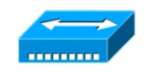
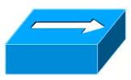
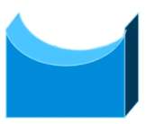
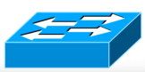
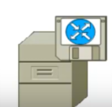

Composants
Plan
• Répéteur
• Concentrateur (Hub)
• Pont (Bridge)
• Commutateur (Switch)
• Routeur
Répéteur
• combinaison de récepteur et d'émetteur
◇ permettant de retransmettre les signaux reçus
◇ permet d'augmenter la distance entre deux noeuds
▪ ex : portée WiFi (distance maximum AP - client)
• Fonctionnment binaire
◇ aucune interprétation du signal reçu
◇ couche 1 (physique) du modèle OSI
Concentrateur (HUB)
• amplifie et multiplie le signal vers plusieurs PCs
◇ forme de répéteur / multiprise
• Traitement binaire
◇ redistribution du signal sur tout les ports
◇ couche 1 du modèle OSI
▪ physique
• petit conctrateur 10BaseT

• concentrateur 100BaseT

Pont (Bridge)
• assure la connexion entre réseaux distincts
◇ de technologie semblables ou différentes
◇ plan d'adressage identique
• Filtre les collisions et évite de les retransmettre
• Couche 2 (Liaison) du modèles OSI

Commutateur (Switch)
• “hub intelligent" et “pont multi-port”
◇ aiguille les trames reçus vers le port / segment adéquat
▪ relativement à l'adresse du destinataire
• forte diminution (voir totale suppression) des collisions
• niveau 2 (Liaison) du modèle OSI

Routeur
• niveau 3 (réseau) du modèle OSI
• fait transiter des paquets d'une interface à une autre
◇ selon un ensmeble de règles
• permet d'interconnecter plusieurs réseaux
◇ le plus souvent via le protocole IP (adresse)
▪ plans d'adressage différents
• détermine le chemin emprunté par un paquet
• routeur

• logiciel de routage sur serveur applicatif

Ce qu'on a couvert
• Tour d'horizon des différents composants d'un réseau
◇ répéteur
◇ concnetrateur ou hub
◇ pont
◇ commutateur ou switch
◇ routeur